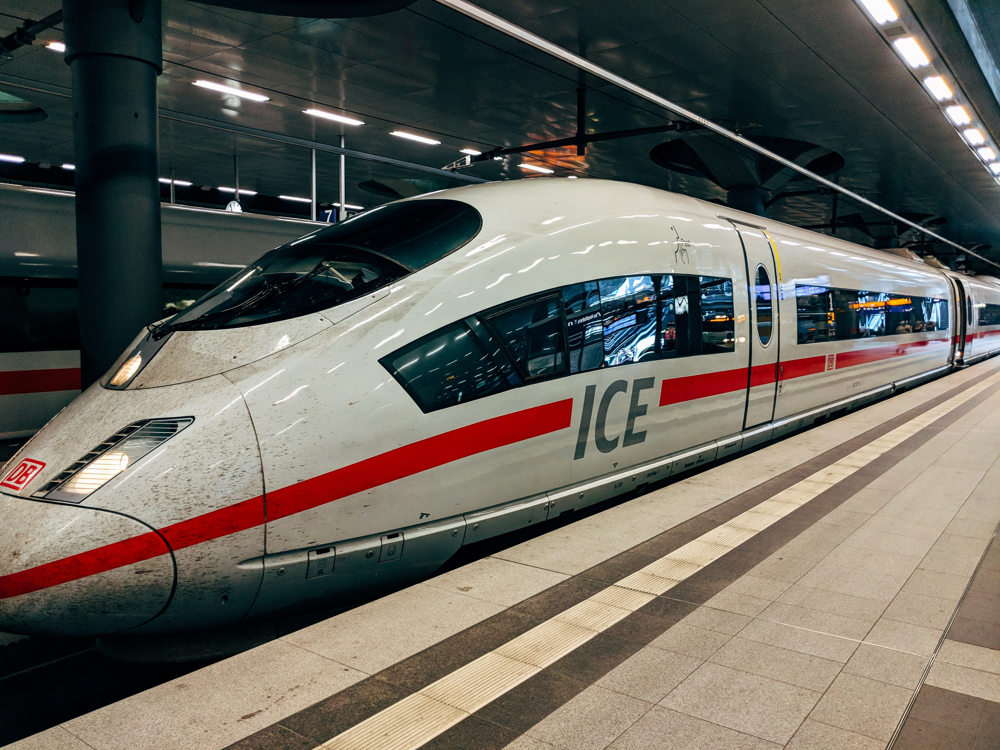

The First high speed train "bullet train" began in
Japan in 1964
Here is some picture of Bullet train

The current world population is 7.8 billion according to United Nation and is about to reach 8.5 billion by 2030. So the global demand for transport is growing fast. In this context Global entrepreneur are working towards on high speed with minimal atmosphere pollution. And Elon musk has introduced a word Hyperloop which can convey people one place to other easily